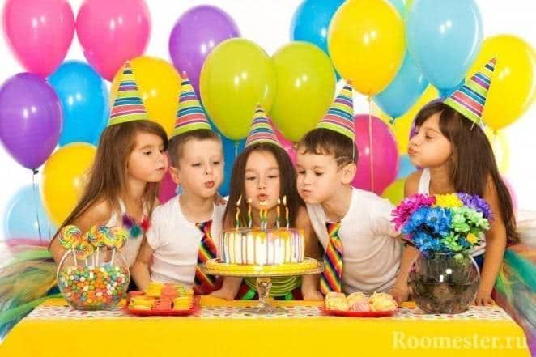
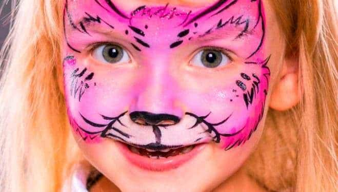
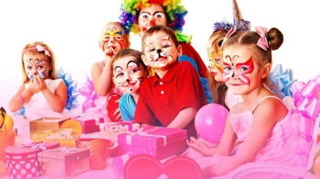

Дни рождения



5 причин подарить ребенку полезный праздник!
• ИНДИВИДУАЛЬНЫЙ СЦЕНАРИЙ ДНЯ РОЖДЕНИЯ — при подготовке праздника мы учитываем возраст вашего ребенка, его способности, интересы и увлечения.
• ШИРОКИЙ ВЫБОР ТЕМАТИК — от зажигательной вечеринки в стиле Пиратов до незабываемой Гавайской вечеринки
• АНИМАТОРЫ - которые просто обожают детей и специализируются на работе с ними.
• ВОЛШЕБНЫЙ ДЕНЬ – море ярких эмоций и незабываемые впечатления вашему ребенку и его друзьям гарантированы.
• ДОСТУПНЫЕ ЦЕНЫ — о родителях мы тоже подумали.
Дополнение к празднику: аквагрим, украшение зала, фотограф
Предварительный заказ за 10 дней до проведения праздника
2 аниматора
Большой выбор оригинальных сценариев
Продолжительность программы 1 или 2 часа
Незабываемый праздник без забот
Море положительных эмоций
Сценарии праздника:
В гостях у сказки 3-6 лет
«Колобок», «Теремок», «Репка», «Муха-Цокотуха», «Лиса и заяц», «Кот в сапогах».
Став героями сказки, ребята будут отгадывать загадки, участвовать в играх и веселиться.
На сказочных тропинках 4-7 лет
Волшебная тропа проведет детей через известные сказки, но на пути их ждут ловушки, заколдованный коридор и прочие препятствия, преодолев которые, ребята смогут попасть на пир в
тридевятое царство!
Принцессы 3-9 лет
Добрая фея помогает справиться со всеми бедами, и конечно же, каждая девочка мечтает
оказаться на балу в роскошном платье и быть самой красивой среди приглашенных.
Зов джунглей 5-10 лет
Мы приглашаем тех, кто отчаян
В дикие джунгли скорей.
Там крокодилы, львы и гориллы,
Слон и пантера в зарослях ждут.
Если ты смелый, ловкий, умелый,
Джунгли тебя зовут!
В поисках сокровищ 5-10 лет
Программа разработана специально для любителей приключений. Это большая игра по мотивам различных художественных произведений о морских путешествиях, островах и сокровищах.
Минута славы 5-13 лет
Если Ваш ребенок обладает музыкальными способностями или танцевальным даром, то этот
сценарий ему понравится. Именинник должен предупредить гостей о том, что программа
посвящается талантливым детям. Ребята могут заранее подготовить номера и костюмы.
Дикий, дикий запад 5-12 лет
Юные индейцы обожают приключения? Тогда стоит их проверить на ловкость, на умение
вызывать дождь и охотиться на животных. Им предстоит найти путь к таинственной пещере
предков...
Приключения в стране Винкс 5-9 лет
Юные «волшебницы» попадают в мир Алфеи. Выполняя различные задания и преодолевая
возникающие на пути препятствия, девочки находят сокровища добрых фей.
Послание от Робинзона 3-9 лет
В море найдено таинственное послание. Кто его написал? Неужели сам Робинзон? Ему нужна
наша помощь! Ну что, готовы приложить усилия и спасти Робинзона?
Сокровища пиратов 7-12 лет
Совместно с капитаном пиратов и его помощником ребята отправляются на поиски сокровищ, попадая при этом в самые невероятные истории, где надо проявить не только ловкость
и отвагу, но и умение поддержать друг друга.
Хранители знаний 9-13 лет
Это энергичная интеллектуальная программа. Ребятам придется в нешуточном бою отстаивать свое право на владение ключами от хранилища у старейшего Хранителя, которому не
очень хочется расставаться с ними и передавать их молодому и знающему поколению.
Ключи помогут открыть дверь в Хранилище и найти приз.
Гавайская вечеринка 8-13 лет
Это увлекательное путешествие на Гавайские острова, где ждут ребят веселые игры и забавы,
зажигательные танцы и солнечное настроение!
Ужастики 8-13 лет
День Рождения можно весело отметить в стиле ужастика. Пусть на вашем празднике присутствуют сказочные существа, ведьмы, вампиры, водяные... Ребята проходят загадочные лабиринты и препятствия, которые необходимо пройти, побеждая злых духов.
Форд Боярд 8-13 лет
Охота за сокровищами форта. Участники проходят испытания-приключения, добывая под-
сказки. На каждое приключение отводится определенное количество времнеи, по испытанию
которого подсказка сгорает, либо становится недоступной.
Тролли 3-7 лет
Кто такие тролли? Тролли — забавный безобидный народец, весело живущий в чудесной волшебной стране. И они самые лучшие тусовщики и устроители крутейших вечеринок в мире!
Гиперактивная, развеселая и непоседливая Розочка — главная заводила, запевала, да
вообще настоящая душа компании у троллей.